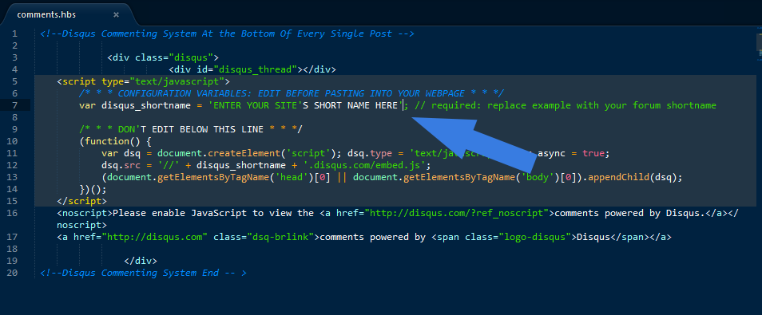

“Pristine Theme v1.0 ” Documentation by “Naveen Singh “
“Pristine | A Minimalistic Ghost Theme ”
Thank you for having this theme. If you have any questions that are beyond the scope of this help file, please feel free to email here. Thanks so much!
Table of Contents
- Getting Started With Installation
- Setting Up Disqus Comments
- Logo & Background Images
- Configure Analytics
- Using Font-Awesome v3.2.1 Icon set
- Changing Author Bio
- Sources and Credits
Getting Started With Installation
Extract the contents of Pristine in a folder and move the folder to
Ghost > Contents > Themes > and place it here.
If you install it locally restart Ghost to see changes.
And if online refresh the Settings page scroll down to the themes option and select Pristine from the dropdown.
The comments system Would'nt work untill you set it up.
Head to Disqus.com and register your website, you will be assigned a short-name for your website.
Note down the shortname.
Goto content/themes/Pristine/partials
And open "comments.hbs" file in a text editor
Look for this line
" var disqus_shortname = 'ENTER YOUR SITE'S SHORT NAME HERE';
// required: replace example with your forum shortname "
And replace "ENTER YOUR SITE'S SHORT NAME HERE" with your site's short name.

Save the page and refresh.
If any problem related to this ? please ask them in the comments
Do not edit anything here other than changing shortname or it will mess things up
B) Logo & Background Images & Favicon - top
Changing the Logo
Head to the Settings option in Ghost admin Panel.
Scroll to the select logo option
Upload the image, save it.
Changing the Background Image
We've included one beautiful image as seen in the demo, in the assets/images folder, you could use it.
If you wish to change the bg then,
Head to the Settings option in Ghost admin Panel.
Scroll to the select background option
Upload the image, save it.
Changing the Favicon :
To add a favicon use an image of 32x32 px or 48x48 px
Use an online converter to convert your image to .ico format.
Once done place it in the assets/images folder.
And thats it refresh the page to see the change.
C)Configure Analytics
-
top
D) Using Font-Awesome v3.2.1 Icon set - top
Font awesome provides free icons which are used and styled like fonts you can use them within your posts, you just have to include a small code.
Head to this link Font-Awesome and see all the icons available and learn how to use them.
E) Changing Author Bio - top
Author Bio is been showcased at the bottom of every post page add your details using following instructions.
Upload a picture of your's From the Ghost admin panel /ghost/users
Write a little something about yourself in the bio section
Give a link to your Website
Thats it refresh the post page and see the changes
F) Sources and Credits - top
I've used the following Fonts And Icons.
Once again, thank you so much for having this theme.I'd be glad to help you if you have any questions relating this theme. No guarantees, but I'll do my best to assist.
Naveen Singh
Go To Table of Contents